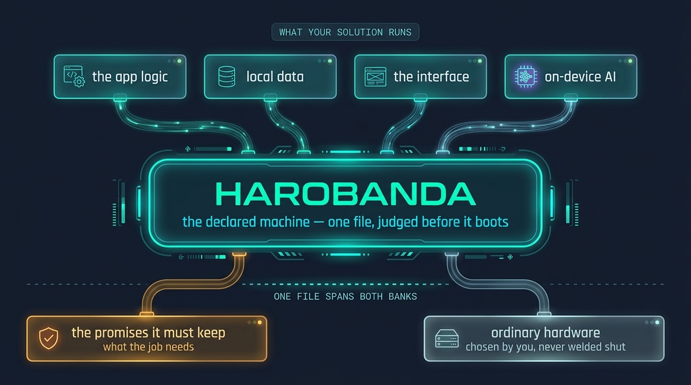
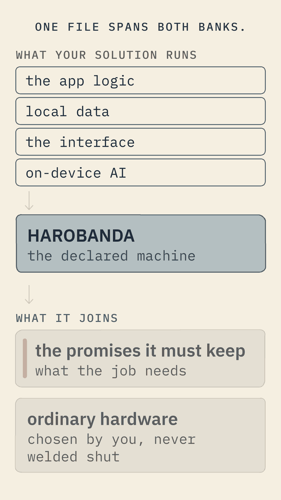

Why Harobanda
Every OS you can buy is shaped by its vendor. This one is shaped by your solution.
Three differences separate a declared machine from everything else you could run — in what it is for, what it sells you, and what no one else can take away.


The gap
Three kinds of operating system — and you control none of them.
Whatever you run today is one of three, and each takes the floor away from you in its own way.
Shaped by a business model
The account you sign in with, the store you cannot remove, the telemetry you cannot see, the update you cannot refuse, the support that ends on a date someone else picks. None of it serves your job — it serves the vendor's revenue, and the forest of apps you must install is the product.
Free to read, still not yours
Even a free system is governed by the company that curates it. You inherit its package repositories, its defaults and its release calendar; you keep a plugin ecosystem alive; you live in dependency hell, where upgrading one thing moves ten others. Free is not the same as sovereign.
Hardware and software, fused
The sharpest case. The vendor welds the two together so tightly that you cannot run your own system on their device, and cannot have their device's abilities on hardware you chose. The user — and the designer — is closed inside a link neither can open.
Difference one · the solution mindset
The solution comes first. The machine is derived from it.
You do not bend your solution to fit the OS. You write down what your solution must guarantee — a fixed address the devices can find, a log that survives a power cut, a data store that never leaves the building, a clean restart after the mains drop — and the machine is derived from that sheet. It does exactly one job, and it can prove it does.
A machine is one text file. Each line is a plain fact: what it is, what storage it mounts, which programs it keeps running, and what it is allowed to touch. There is no configuration to discover later and no hidden state to reverse-engineer — the machine is its file.


An example
A temperature sensor in a cold room, running on a general-purpose Linux, still needs kernel updates, a package manager, remote-login hardening and service configuration — none of which have anything to do with measuring temperature. Each is a door for a problem and a job for someone who is not there. A declared machine has none of it, because none of it was declared. The sensor's job is the whole of the machine.
A general-purpose OS
- Built for everyone, adapted by you to one job
- Ships with far more than your solution needs
- Configured by hand; the config drifts over time
- You hope it behaves; you cannot prove it will
A declared machine
- Built for one job, derived from what that job needs
- Contains only what was declared, nothing more
- Is its file; a change is a new file, judged again
- Proves its boot against its own declaration, every time
Difference two · no business model, no jungle
Nothing on the machine is selling you anything — or rotting.
There is no account, no store, no telemetry, no per-seat licence, and no vendor living inside the system. And there is no package manager — so no dependency hell, and no plugin jungle to keep alive. What the machine runs is a closed list shipped in its image; nothing is installed at run time, nothing is discovered, and a change is a whole new image.
This also means the machine cannot rot. On an ordinary system — free or paid — packages update, break each other, and the machine you deployed is not the machine running a year later. A declared machine is the same machine on its thousandth boot as on its first, because nothing on it changes after the image is built.
An example
A shop's tablet running a payment app, a messenger, a video app and a browser is not a tool for the job — it is a distraction from it, and an open door for whatever the vendor wants installed next. Half the staff's day goes to keeping it working. A declared machine runs one thing: the job. There is no drawer to fill, no notification to dismiss, and nothing on it that anyone profits from.
What it refuses — and why that is the point
The jungle is not held back by a policy someone can relax later. It is refused by the grammar itself — there is no sentence in the language that even asks for a shell, a store or an installer.
Difference three · sovereignty by design
Sovereignty is what no one else can withdraw.
You do not truly own a system you cannot rebuild, whose updates you cannot decline, and whose support ends on a date someone else chose. These are not hypotheticals. A major phone maker once removed the ability to unlock the bootloader on every device it had sold, worldwide, in a single update, with no warning. When the vendor lives inside the system, the vendor decides — and can decide against you.
The phone is the extreme, and worth naming plainly: the vendor fuses the hardware and the software so that neither can leave the other. Sovereignty is the opposite. You choose ordinary, replaceable hardware, and you own the system that runs on it; the two are joined by your declaration, not by a vendor's weld. Sovereignty here has exactly one meaning — nothing anyone else can withdraw — and it has never meant “every line is ours.” The kernel underneath is kept as pinned source, rebuilt by your own toolchain: borrowed, but impossible to take back. And the whole machine is one text file plus a short list of exact fingerprints, which you can hand to any provider you choose. Reversibility stops being a clause in a contract and becomes the thing itself.
An example
An organisation whose most sensitive records must never leave its walls cannot prove that on a system it does not control. A declared machine can: one line says the box knows no route to the outside world, and the court refuses to build the machine if anything on it contradicts that line. “The data stays here” stops being a promise on paper and becomes a fact the machine itself enforces. Compare the usual offer — a management console the vendor lets you build, while the agent, the service and the ownership stay theirs: you own the screen, not the power.